Quick Guide¶
This user manual explains how to use the PyLOSt application.
The project has 3 different functionalities (a) setup of instruments and algorithms via settings, (b) preparing data in hdf5 format, (c) view/stitch hdf5 data
- 1. Settings section:
To add new instrument or algorithm and their options. This data is saved to a sql database, and this information will be used in data processing module
- 2. Data preparation:
In this section raw data from an instrument is converted to hdf5 format (.h5 file). A new conversion module has to be added for each new instrument. Ignore if the data is already in a compatible hdf5 fromat
- 3. Stitching module:
This module can stitch (2D) data over a number of subapertures. The data can be slopes or height of a surface. It has option to stitch with different stitching algorithms. Some additional features such as masking or binning the data are also available.
1. Setting up instruments and algorithms¶
The application starts the following gui. The tab Convert to H5 allows user to convert raw formats to hdf5, and the tab Settings is used to open the h5 file and do stitching. The button Settings opens a Settings GUI which can be used to add instruments or algorithms to the application
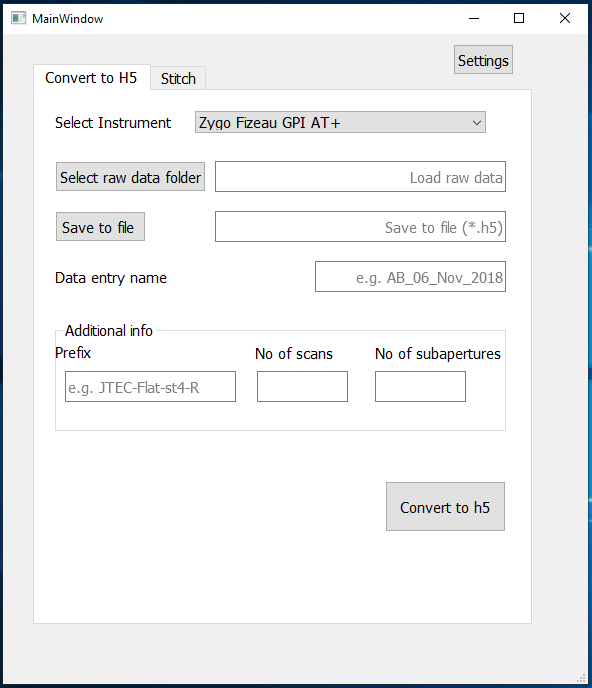
1.1. Adding a new instrument or algorithm¶
Instruments and algorithms can be added as shown below. Instrument type is used to differentiate between multiple instruments of same type (e.g. two Zygo Fizeaus). Location field implies the physical location (e.g. ESRF).
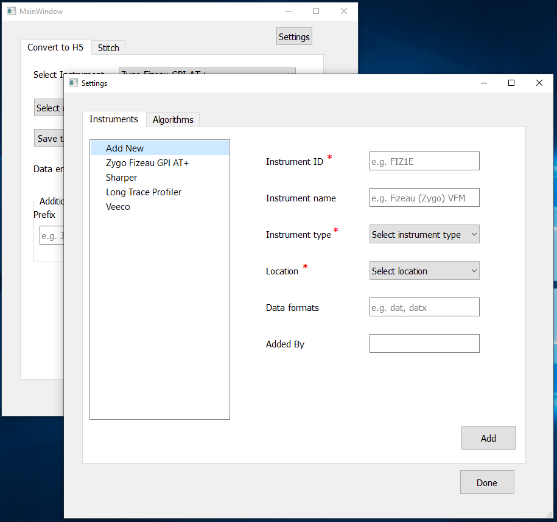 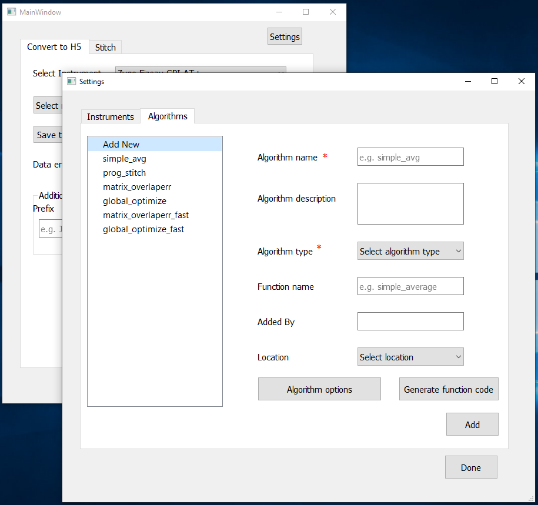
1.2. Setting stitching setup options¶
Additionally stitching setup options can be defined for each instrument as shown below. These options are instrument specific and they are used when stitching methods are called.
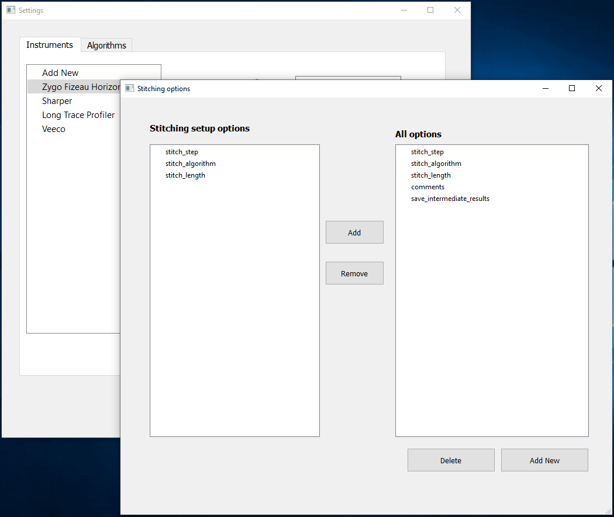
1.3. Algorithm options¶
Stitching algorithms can take additional arguments such data is slopes or get reference from measurements. These options can be defined for each algorithm and they are passed as arguments to algorithm implementations while stitching.
At the end a python file can be generated using the button Generate function code and it can be used as a link add to user stitching scripts
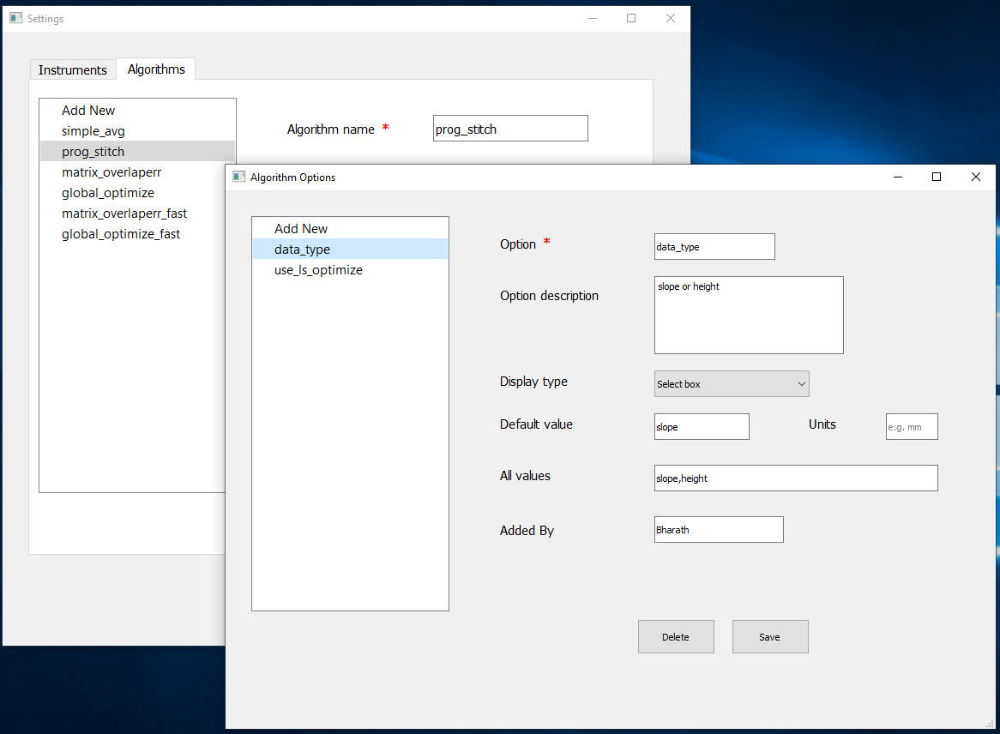
2. Convert raw data to hdf5 file format¶
The PyLOSt application requires the input data in hdf5 (h5) format. Raw data from different instruments has to be converted to h5. This app contains h5 conversion functions for SHARPeR (.has), ESRF LTP (.slp2), Zygo Fizeau (.dat), Veeco MSI (.opd) formats. Additional converter functions for other instruments can be added by users.
Each h5 file can contain measurements of a sample from different instruments. Entry name for each instrument can be specified as shown in figure below. The gui form was adapted to convert for ESRF measuremnt file names. A typical file of ESRF instruments contains the fields {prefix}, {forward/backward}, {scan_number}, {subaperture_number}.
A reference measurement can also be uploaded to the measurement data in h5.
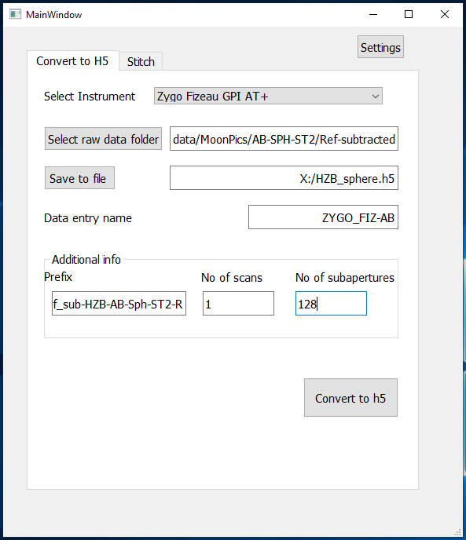
3. Stitching section¶
Stitching procedure has the following steps.
Step 1: Selected entry and add a new stitch setup. This creates a new group with the setup name in h5.Step 2: (optional) Add mask in the setup group in h5Step 3: Select a setup and stitch. This creates group ‘/stitched_scans’ with all stitched scans under setup groupStep 4: Post processes e.g. average/std stitched scans, integrate slopes, plot results etc…
3.1. Preview data¶
Data in the h5 file cn be visualized in the PyLOSt stitching gui, which was designed using widgets from silx widgets. The silx module is a data processing and visualization toolbox developed by the ESRF. The figure below shows the height subapertures of the moonpics HZB spherical mirror.
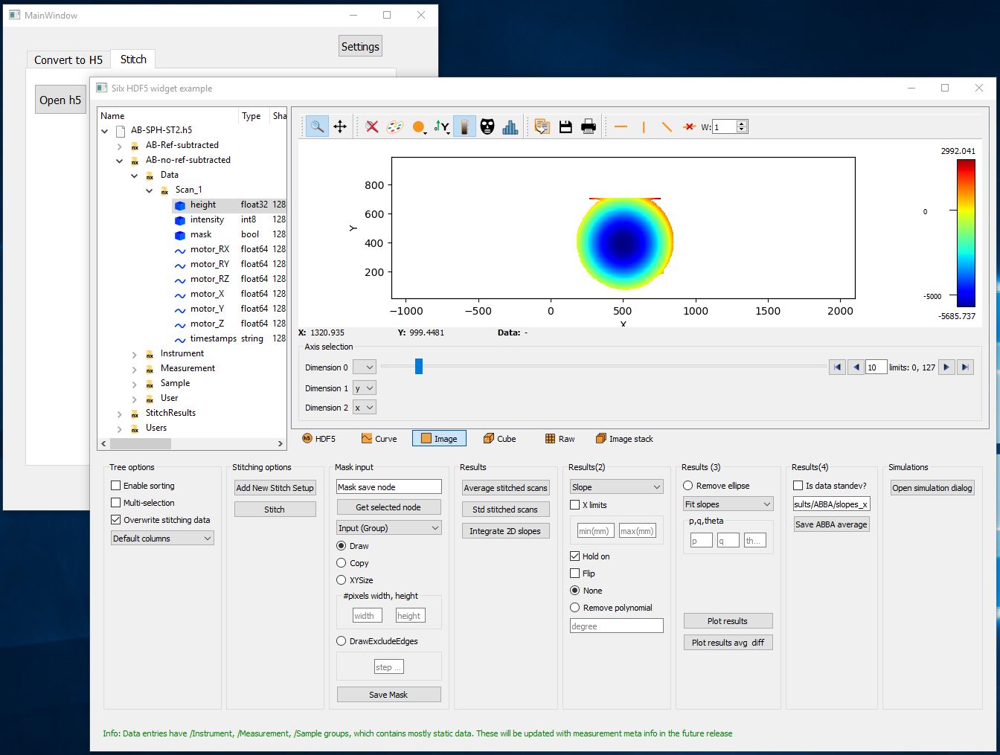
3.2. Add new stitching setup¶
To add a new stitching setup, an entry containing measurement data has to be selected. Clicking add new stitch setup button or through right click on entry, a new dialog with stitching options can be opened.
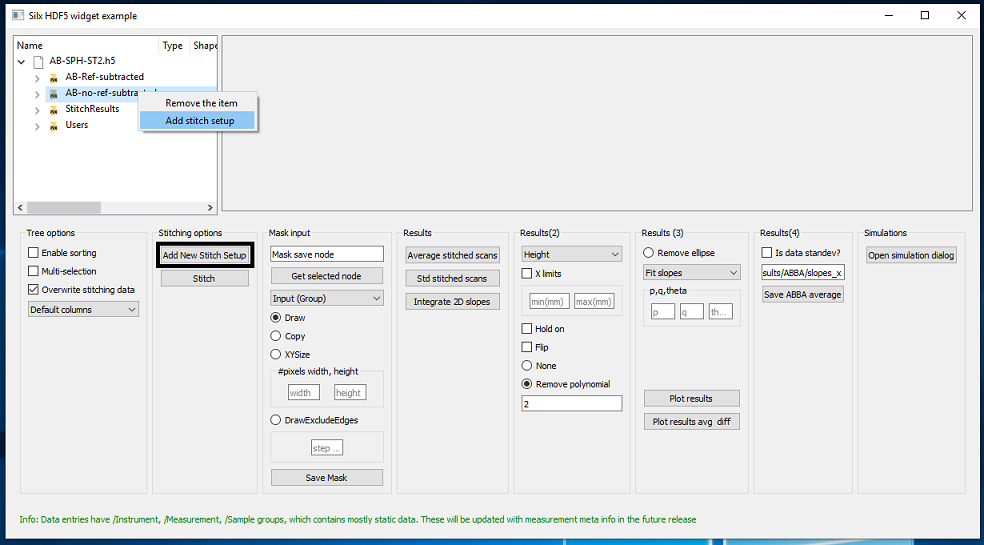Figure below shows the new setup dialog. Descriptions of stitching and algoirthm options can be viewed with help buttons. Stitch step provided here will be used if the translation motor positions are not saved in the raw data.
In one of the options stitching algorithm has to be selected. Current PyLOSt version has four algorithms (1) Simple, (2) Progressive, (3) Matrix method of overlap errors, (4) Global optimization methods. Selecting an algorithm enables a set of options related to that algorithm. For more information on algorithms refer to documentation of each algorithms.
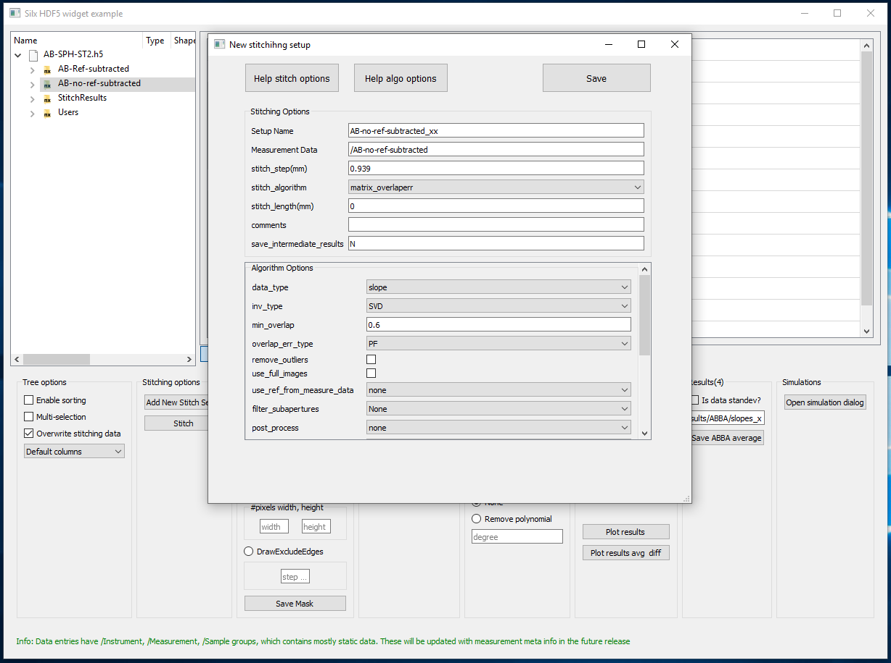
3.3. Add mask¶
PyLOSt has three types of masks, (1) input mask to apply for all of subapertures, (2) input mask to apply only for the subaperture currently displayed, (3) output mask. Input mask is applied on subapertures before stitching whereas output mask is applied to stitched results for post processing. A mask can be drawn on top of image displayed in dataviewer, or it is created of specific width & height centered on the current image, or it is copied from other location, or it is created excluding an edge pixels.
Important: Input mask has to be saved to stitching folder (e.g./StitchResults/AB1/), Output mask has to be saved to the stitched data folder (e.g./StitchResults/AB1/scan_avg/)
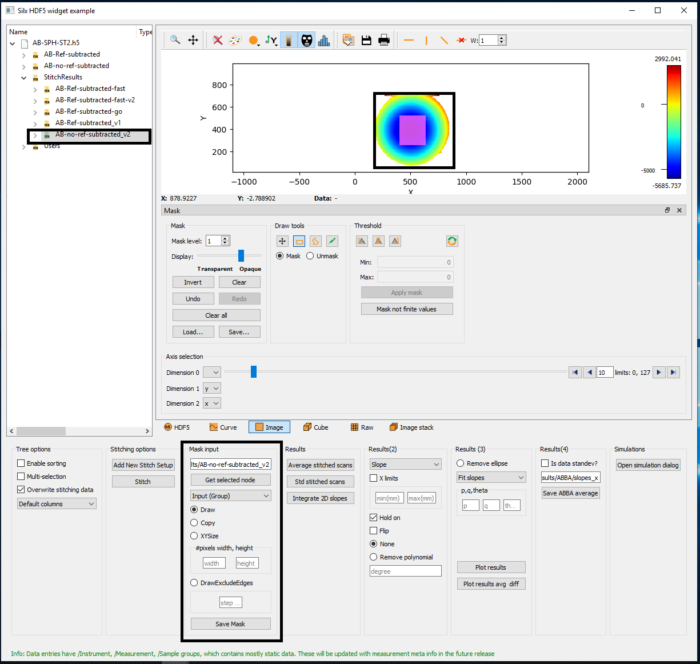
3.4. Post processing : Average/std stitched scans, slope to height¶
Find the average / standard deviation of a number of stitched scans (e.g./StitchResults/AB1/stitched_scans/{Scan_xx}), which are saved to scan_avg (e.g./StitchResults/AB1/scan_avg/). Slope data (2D) can also be integrated to Height (2D) saved to scan_avg.
3.5. Post processing : Plot stitched data, remove polynomial / ellipse¶
Stitched data slopes or height (2D or 1D) can be plotted (output mask is applied if any), with a polynomial of nth order or a best fit ellipse removed. Multiple data can be selected and plotted together or plots can be added with hold on.
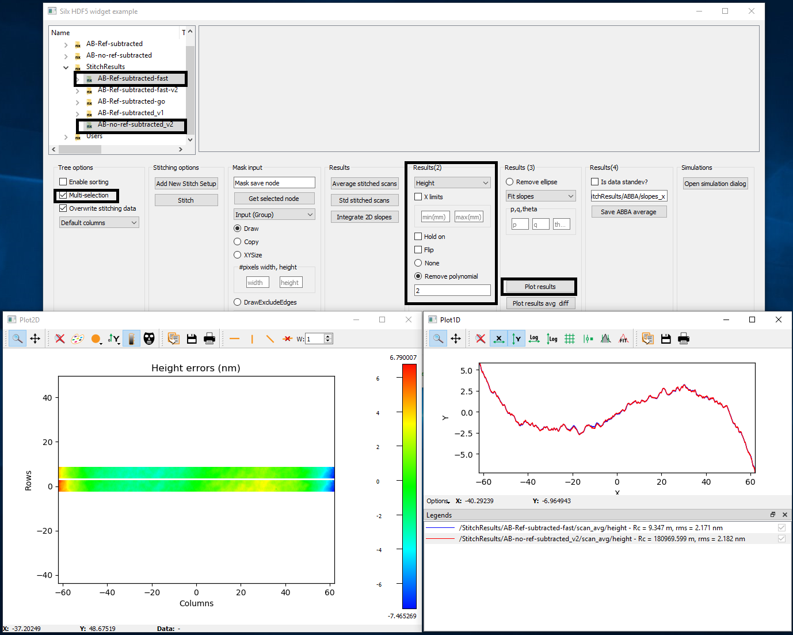
3.6. Post processing : ABBA average¶
ABBA average of the AB and BA (mirror flipped along stitch axis) slope/height measurements can be saved to a new group. The AB and BA should be open in the plot window to get the average.